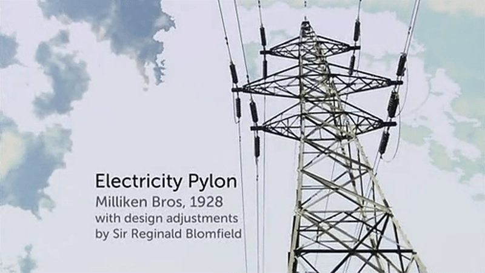

The Genius of Design II
Designs for Living

- 

-
"Fried air, which is an Italian saying for things which are meaningless. But imagine if you could take air and fry it so then it became stiff, then you sit on it, that wouldn't be bad."
炸空气，在意大利的俗语中是表示毫无意义。但设想一下你可以将空气炸一下，让它变得结实，然后你可以坐在上面，这真是个不错的主意。
-
"Cartoonist Heath Robinson poked gentle fun at the modernist lifestyle in his book How To Live in A Flat."
漫画家 Heath Robinson 巧妙地在他的漫画书《公寓生活指南》中讽刺了现代主义可笑的生活方式。
-
"Loved and loathed at the time, they left an unmistakable imprint of modernity on the timeless British countryside. Today, they have achieved one of the prime objectives of all successful design - near invisibility."
无论是褒是贬，塔桥在英国的乡村中留下了不可磨灭的代表现代性的永恒印记。如今，塔桥的设计实现了成功设计的一个主要条件——习以为常以至于忽略其存在。
-
"The difference between American and European design is fascinating. European design is more concerned with teh self-expression of the designer, versus American design, which is way more pargmatic. It's about the mainstream, because that's where the money is, that's where the manufacturers are interested in operating."
美国和欧洲不同的设计态度，很耐人寻味。欧洲设计更注重设计师自身的自我表达，相比而言，美国设计则是更加实用主义的，它关注主流嗜好，因为大众才是赚钱的保证，大众才是制造商最关注的群体。
-
"Dreyfuss developed a systematic approach to design, based around idealised male and female figures. He would eventually christen them Joe and Josephine, typical Americans, from their heads to the tip of their precisely measured toes. Henry Dreyfuss called it human factors. The science of the interface between people and things, and it really is a science. There's a lot of actual measuring of things - distances, heights, weights, all those things. Bur more than that, a lot of observational stuff. You could say he was the father of observational ethnographic research, because he used to look at how people actually used things, how they sat in a chair and so on, which is what designers do today."
德雷福斯为设计带入了一种系统的研究方法，根据就是男女的标准人体数据。他给这些人体取名为 Joe 和 Josephine，典型的美国人，从他们的头顶一直精确测量到脚尖的各个身体尺寸。德雷福斯把它叫做人机工程学，它是关于任何物品之间界面交互的科学，包含众多距离、高度、重量的数据，不仅如此，还包含很多细致的观察。可以称呼德雷福斯为人类观察研究之父，因为他经常会去仔细观察人们怎么去使用各类产品，比如人们是怎么坐在一把椅子上的，现在的设计师都会做这类调查。
-
"(It is) an example of what you might call folk modernism. Byam's design delivered on the promises made by modernism and the market. It was a machine for living and a dream machine. Le Corbusier meets Henry Dreyfuss."
这种设计我们或许可以称为民众现代主义。Byam 的设计同时达成了由现代主义和市场做出的承诺。它是为生活而设计的，同时也是一件梦幻中的机器。勒·柯布西耶与亨利·德雷福斯在此相遇。